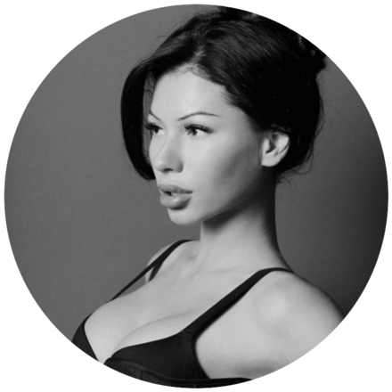

Каркас, который Вы можете внедрять самостоятельно: один флагманский формат на каждый день, понятные форматы Reels и темы по направлениям — собранные из того, что у Вашей аудитории уже находит отклик.
У Вас лучше всего заходит то, где Вы проявлены — женственны, легки, в кадре сами по себе. Но именно этого Вы снимаете меньше всего. Это и есть точка роста.
Каждый день, как традиция — включаете красивую музыку, в разных образах и луках двигаетесь, танцуете, проявляетесь. Нарезаете в эстетичный ролик, от которого сами кайфуете.
Если масштабировать это в ежедневную привычку — формат начинает давать сильный рост по проявленности, притягательности и охватам.
Принципы, которые можно применять прямо в съёмке — без отдельной стратегии. Каждый — про то, что и как снимать на Вашем блоге.
Не «на всех» и не чужой тренд, а через прожитое: трансформация тела, выход из тяжёлого периода, путь с акне. Тогда нужный человек считывает «это про меня» — и досматривает, сохраняет, подписывается.
Меньше чужих трендов, мемов про отношения и нарезок с кричащими заголовками. Больше — где Вы сами по себе: проявленность, живые моменты, личные истории. Это Ваша сильная сторона.
Звонки маме и бабушке, их реакции на Ваши сторис, тёплые диалоги. Эту эмоцию невозможно подделать — и именно она собирает самую лояльную аудиторию.
Косметичка, уход, любимые бренды — но как личная рекомендация от Вас, красиво и со вкусом, а не «привет, девочки, советую помадку». Это поднимает уровень подачи.
Мини-влог 1,5–3 минуты (день, сборы, косметичка) даёт высокую досматриваемость и пересылки. На Вашем уровне блога этот формат уже заходит.
Найдите форматы, что дают результат в любой день и при любом настроении — и снимайте их регулярно. Когда несколько сильных роликов идут одновременно, рост ускоряется.
Каждый формат — это понятный способ снять ролик. Под любую тему ниже подбирается один из них.
Смотрите в камеру и говорите сами. Сильный хук в первые 3 секунды, 20–40 секунд, крупный план, мягкий свет.
Сначала записываете текст и голос, потом накладываете на красивый видеоряд (прогулка, зал, сборы). В кадре говорить не нужно.
Движение и танец под музыку, разные образы. Ваш флагман — снимать каждый день (см. блок выше).
Два кадра или две даты с переходом. Подходит Ваш личный архив — снимать заново не обязательно.
Звонки родным, живые реакции мамы и бабушки, съёмка со стороны на штатив или прислонённый телефон.
Трендовый звук плюс узнаваемая ситуация. 10–15 секунд, динамично, быстро снимается.
Красивый видеоряд под музыку — завтрак, сборы, образ, утро. Высокие сохранения и досматриваемость.
Связка утро → еда → зал → дела, 1,5–3 минуты. Длинный ролик с высокой вовлечённостью.
Темы собраны из Вашего Telegram-канала за 3,5 года — это то, на что Ваша аудитория уже реагировала сильнее всего. Рядом — формат, в котором тему удобнее снять.
Все темы выше уже есть в Вашем Telegram. Не нужно вспоминать — откройте поиск и вставьте фразу. Дата рядом — ориентир, если совпадений несколько.
| Сушка пошагово08.11.2025 | насчет сушки очень приятные |
| Шаги и сон30.01.2026 | 11к шагов |
| Гены мамы, без вмешательств23.01.2026 | без операций и вмешательств |
| Йога в зале (юмор)23.02.2026 | круг зрителей |
| «Не тренер, но база огромная»17.05.2025 | не профессиональный тренер |
| Две девушки — одни волосы03.03.2026 | совершено разные ощущения |
| Как вернула овал лица12.01.2026 | вернула себе красивый овал |
| Танец — женственно и мягко15.03.2026 | зацените как танцую |
| Образ в стиле 00х14.11.2025 | образ в стиле 00х |
| Красная помада: тогда и сейчас15.02.2026 | с красной помадой |
| «Такие люди не меняются»21.10.2025 | противно от таких мужчин |
| Комплименты: мужчина и бабушка28.03.2026 | зачем эти комплименты |
| Женская игривость мамы10.01.2026 | эту сумку мне муж купил |
| Токсичные комментарии — норма?26.02.2026 | улетел на мужскую аудиторию |
| Личные границы / навязчивость04.10.2025 | навязчивые мужики |
| Честно про несовершенства лица10.01.2026 | второй подбородок |
| Год назад: искажённая самооценка23.01.2026 | беды с головой |
| Тело и состояние: год разницы11.12.2025 | шок контент хачапури |
| Мои комплексы05.11.2025 | какие комплексы у меня были |
| Как прошла через акне15.09.2025 | опять акне |
| Тело выглядит по-разному17.12.2025 | гормонального цикла |
| Выход из тревоги и апатии20.02.2026 | ни бессонницы, ни тревоги |
| Поздние завтраки и энергия25.02.2026 | поздние завтраки |
| Зачем набирать, чтобы сушиться13.11.2025 | зачем сначала набирать |
| Челлендж «14 дней режима»24.11.2025 | 14 дней идеального режима |
| Бабушка и её реакции на сторис19.02.2026 | реакции на каждую мою сторис |
| Обед с мамой по КБЖУ23.01.2026 | с мамулей пообедали |
| Участь старшей сестры30.09.2025 | участь старшей сестры |
| Миф о «семейном метаболизме»19.11.2025 | наследственное |
| Тёплые диалоги с мамой12.12.2025 | не выпирает ли скотч |
| Сильное женское окружение24.06.2023 | владелица крупного ювелирного |
| Инвестиция в обучение и страх14.09.2025 | 130к на обучение |
| Новая цель: права на мотоцикл03.03.2026 | мотик себе присмотрела |
| Закулисье создания мерча02.05.2026 | до показа держать в секрете |
| Как среда тянет вверх15.10.2025 | тренер обсуждал тебя |
| Близость с аудиторией01.10.2025 | ставите реакции и комментируете |
| Праздники, традиции16.01.2026 | Подарок на Старый Новый год |
| Цепляющее наблюдение25.06.2023 | такой вброс |
| «Тренд не получается»04.10.2025 | тренд из тик тока |
| Утро, парк, замедление16.05.2026 | пошла в парк читать |
Здесь нет ничего, что нельзя снять самостоятельно. Это система: один флагманский формат каждый день, понятные форматы под темы и направления, которые у Вашей аудитории уже работают.
«У Вас уже есть главное — вкус, харизма и проявленность. Осталось добавить систему — и она даёт кратный рост.»